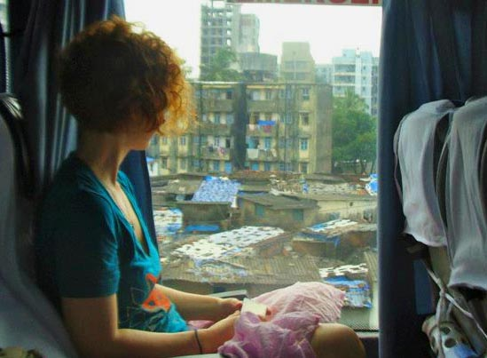
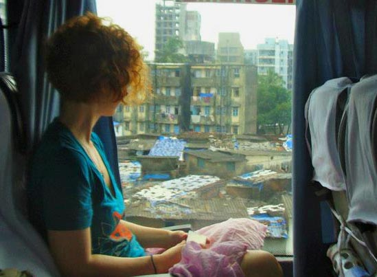

*1992: started existing (great year for me)
*1993-2010: read a lot of Victorian books
*2011: transfered to UChicago (embraced unhappiness)
*2012: wrote play God of Philadelphia"
*2012: went to India for second time
*2012: got struck by lightning
*2013: got suspended from school for having a mental breakdown (though impeccable grades)
*2013: got internationally famous for writing well about said mental breakdown (CNN, Wallstreet Journal, CNN-India etc)
*2013: Learned to code, illustrate and created Dead Book City
*2014-15: failed to drop out of University of Chicago (ie graduated with honors in South Asian Studies/Lit)
*2015: hitchhiked around the country
*2015: moved to LA (got too tired to hitch out)